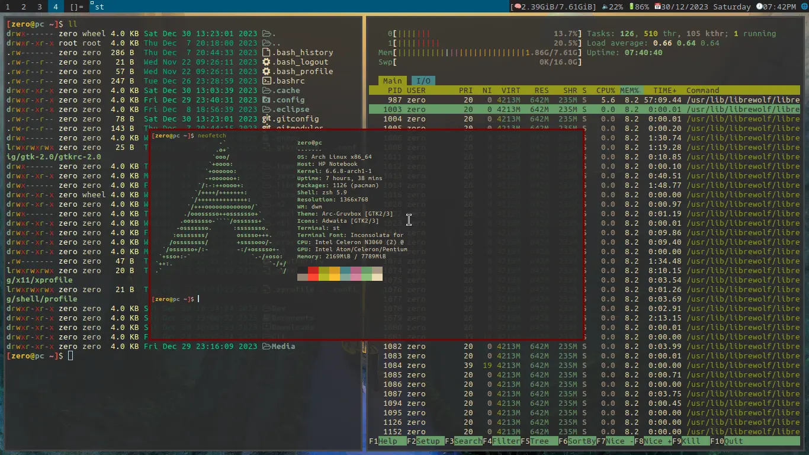

Empecé a usar GNU/Linux en febrero de 2022 con la distro Ubuntu, luego unos días después me pase a un version más ligera Lubuntu y me quede varias semanas, hasta conocer Arcolinux una version mucho más fácil de instalar que el original Archlinux, fue mi distro por varios meses, aunque aveces probaba otras distros como Voidlinux y distintas versiones de Arcolinux, pero no hasta hace menos de un año me pase a Archlinux limpio y con una instalación desde cero.
Dentro de Arch pase por varios gestores de ventanas, entre ellos: qtile, xfce4, lxqt y dwm que es mi actual gestor. Deje de utlizar herramientas o software bloated (lleno de cosas innecesarias) y pasar a cosas más simples y que siguen la filosofía de Linux "Hacer una sola cosa y hacerla bien." como st, lf, vim, dmenu, y demas programas de los que hablo en el post de Software que recomiendo.
Con todo lo contado anteriormente, a continuación muestro una imagen de como se ve mi rice de Arch usando los programas que mencione.

Guías para instalar Archlinux